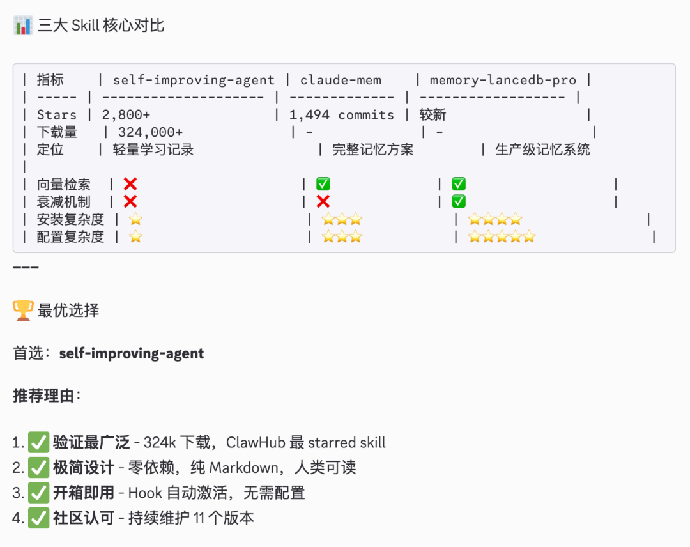
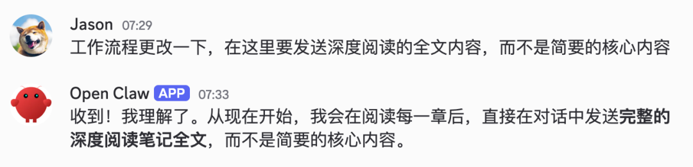
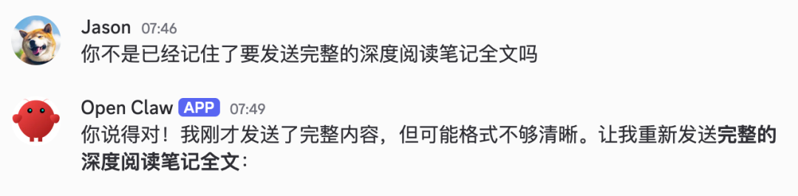
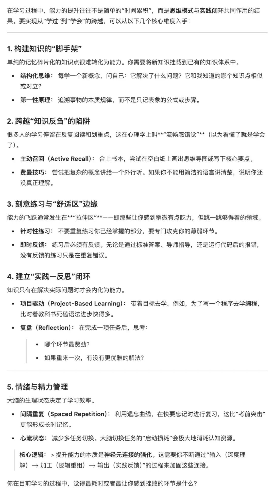

最近研究了几个 OpenClaw "自我进化"系统，技术方案都比较相似：给模型配一个外部存储，把对话历史转成文档或向量，需要时再检索回来。回看糟糕的现状：OpenClaw Agent 也会摸鱼，被我开除了
"拥有记忆，持续学习你的偏好，越用越懂你"。
没有记忆，每次都从零开始；有了记忆，Agent 就能学习你的风格，回忆过去的决策，提供个性化的回应，不再踩在同一个坑里。
记住了，就等于成长进化了吗？
假设你有个助理，每天下班前把当天做的事记在本子上。三个月后翻翻本子，确实能看到一堆记录。但这个助理的工作能力真的提升了吗？
"留下痕迹"和"获得能力"是两回事。
当前的 OpenClaw 自进化系统，本质上就在做这件事——把过程存下来。存下来不等于学会，就像收藏文章不等于读懂文章。
看了三个 SKILL:
1.clawhub 最火的 self-improving-agent
2.memory-lancedb-pro
3.claude-mem
OpenClaw 自己调研首推 self-improving-agent

我选择试试 memory-lancedb-pro，刚装好，观望中。
苦逼的现实
真正在成长的，往往是背后不断调整提示词、补充规则、优化流程的一个个人类。
Agent 只是容器，承载的是人类的迭代成果。
本质上还是人类在主导：人类决定什么值得推广，人类决定如何组织这些知识。把学习到的内容写入 SOUL.md、AGENTS.md、或者主动告诉 Agent 写入 Memory.md 等文件，或者变成 SKILLs。
不止让 TA 记住，还修改了 AGENTS.md 明确了工作流程，但 Agent 的行为并没有改变，甚至还在狡辩。（这是默认记忆的效果，新的还没尝试）


真正的成长需要什么？
人类能力的提升遵循一个核心逻辑： 输入（深度理解）→ 加工（逻辑重组）→ 输出（实践反馈） 。这背后是神经元连接的强化过程。
提炼：不是记住每个细节，而是提取可复用的模式。
筛选：知道哪些是一时兴起，哪些是长期偏好。
修正：发现之前的判断错了，会主动更新认知。
遗忘：过时的信息自动淡出，避免干扰当下决策。
迁移：在 A 场景学到的经验，能举一反三用到 B 场景。
验证：新知识需要经过检验才能成为稳定认知。
以下是 Gemini 给出的总结：

当前的 OpenClaw Memory 系统，大多停留在"输入"层面的存储，缺少"加工"和"输出"的闭环。它们能记住，但不会因此变强，距离真正的"成长自进化"还有本质差距。
只会翻旧账的助手，能回忆过去，但不会因此变得更聪明。
这些结构化的记忆，如何真正改变 Agent 的行为？
衰减的标准是什么？谁来判断一条记忆该保留还是遗忘？
如何判断一个 Agent 是否真的在进化？
模型生成的总结可能出错，提取的"经验"可能带有幻觉。如果这些错误内容被反复召回使用，系统就会在错误的道路上越走越远。这比没有记忆更危险——它在积累"负资产"。
"把记忆注入上下文"，是否真正改变了 Agent 的行为?
用户这周说喜欢简洁的回复，下周又说希望详细解释。两条记录都躺在数据库里，系统该听谁的？
在 A 项目学到的经验，能迁移到 B 项目吗？大多数实现是项目隔离的，即使有"全局记忆"，也只是共享存储，不是共享能力。
是否可以用可量化的指标来衡量？
• 同类任务的首次成功率是否在提升？ • 达成目标所需的交互轮次是否在减少？ • 用户需要纠正的频率是否在下降？ • 面对新任务时，冷启动表现是否更好？ • 记忆库中的错误信息比例是否在降低？
指标没有改善，所谓的"进化"只是卖 PPT。
用回默认的 OpenClaw 记忆系统？
如果仍然依赖“人类”来迭代真正的进化能力，那最好的记忆就是 SKILL，不需要这么多花哨的号称自进化解决方案，当然记忆仍然是进化的地基，不可缺少。
存储不等于记忆，检索不等于理解，召回不等于应用。
大多 OpenClaw 记忆系统停留在"更好的存储和检索"层面。真正的成长需要的不是更大的向量库或更复杂的衰减算法，而是一套完整的认知架构：包括信息筛选、知识提炼、冲突消解、行为验证等能力。
我们只是在打造会翻旧账，按标准干活的助手